채널: 레디포그로스 (Ready For Growth) | 길이: 18:49 | 날짜: 20260222
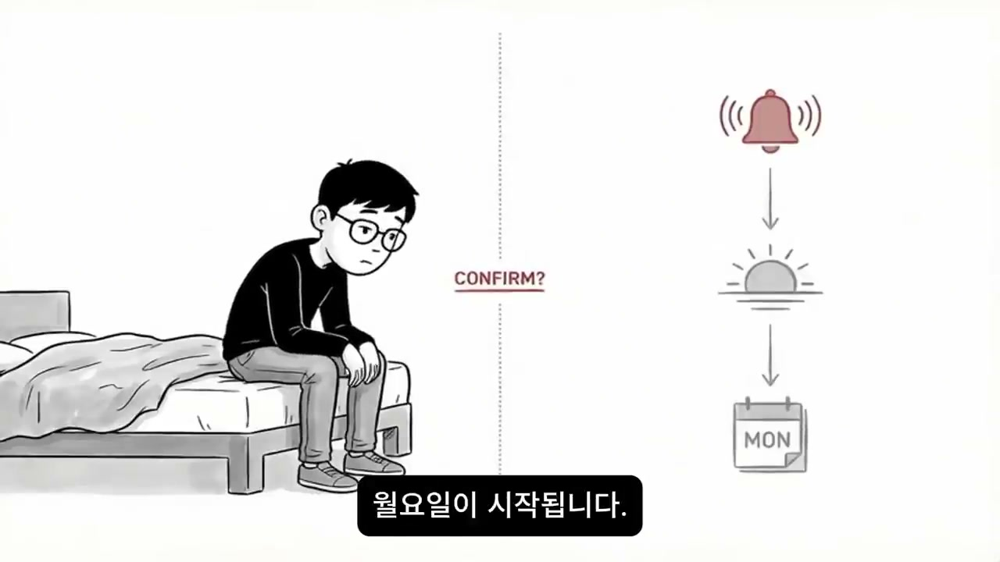
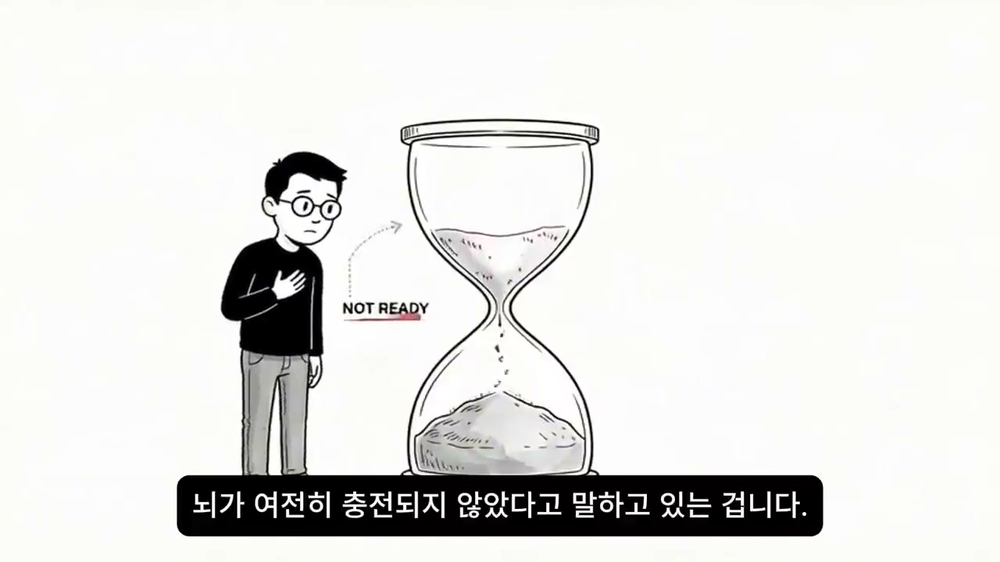
화자는 일요일 밤 침대에서 알람을 맞추려다 손이 멈추는 장면으로 시작한다. 시계의 “내일 아침 7시” 숫자를 보는 순간 가슴이 조여 오고, 알람을 누르는 행위가 곧 “내일의 확정”처럼 느껴진다고 말한다. 잠들면 아침이 오고, 아침이 오면 월요일이 시작되기 때문에, 확정을 미루고 싶어 눈을 뜬 채 버티는 선택을 하게 된다는 서사다. 시간은 멈추지 않아 새벽 1시, 2시, 3시로 흘러간다.
이어 “이건 단순히 출근이 싫은 게 아니다”라고 선을 긋는다. 몸 어딘가에서 “아직 준비되지 않았다”는 신호가 올라오며, 주말에 쉬었는데도 뇌가 충전되지 않았다는 감각이 핵심이라고 설명한다. 문제의 원인을 성격/노력으로 돌리지 않고, 금요일 저녁부터 시작되는 리듬 구조를 해부하겠다고 예고한다.
시각적으로는 CONFIRM? 텍스트와 벨→해 뜸→MON 아이콘이 수직 화살표로 연결돼 “알람 설정 = 월요일 개시”의 심리적 압축을 보여준다. 다음 이미지의 모래시계(NOT READY)는 “시간은 흐르는데 내 준비는 느리다”는 내적 불일치를 상징한다.
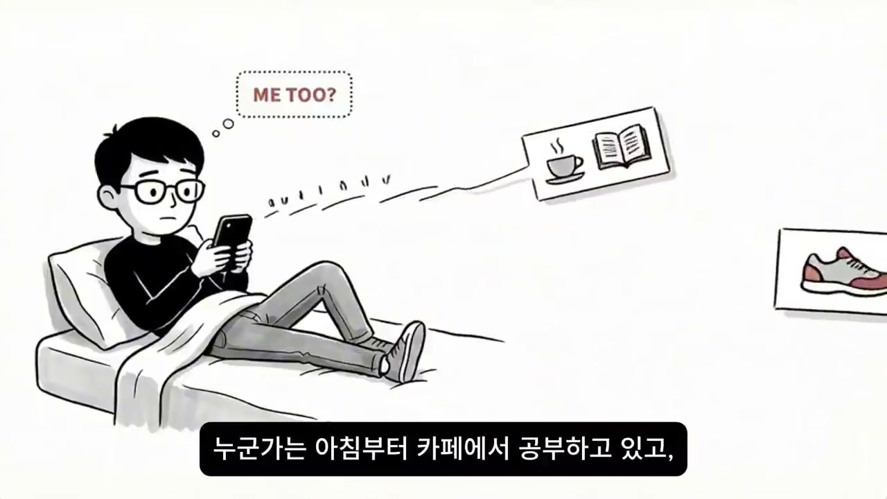
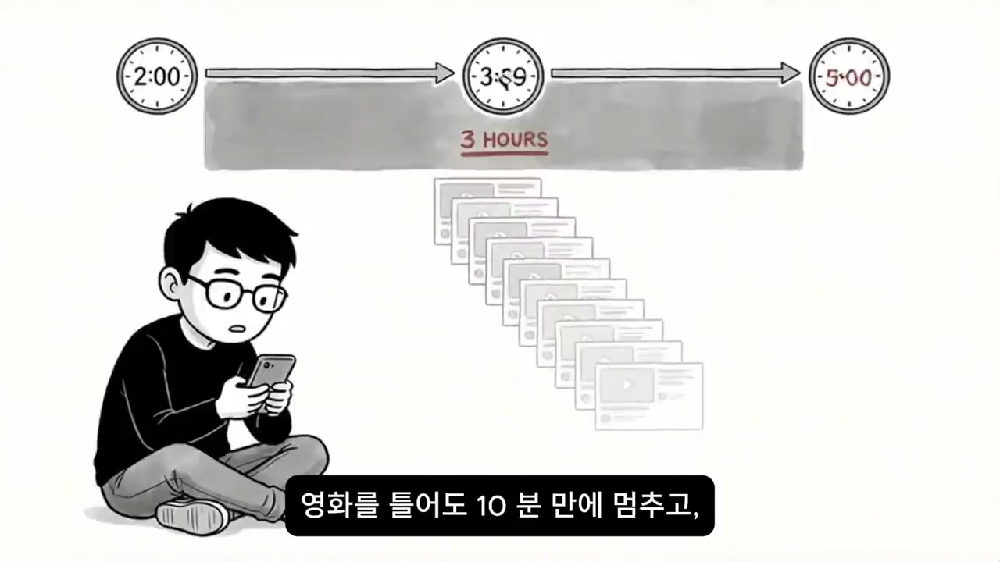
금요일 퇴근길에는 이어폰을 끼고 발걸음이 가벼워진다. 집에 와 신발을 벗고 소파에 앉는 순간은 “이번 주를 버틴 보상”처럼 느껴지고, 아무것도 안 해도 되는 저녁이 주어진다. 여기서 중요한 포인트는 행동 선택의 부재가 안도감으로 시작된다는 점이다.
토요일 아침에는 알람 없이 눈을 떴고 이미 10시가 넘었다. 분명 많이 잤는데도 개운하지 않고, 머리는 무겁고 기분은 흐릿하다. 침대에서 피드를 스크롤하며 “누군가는 카페에서 공부, 누군가는 러닝 완료” 게시물을 보고, “나도 뭐라도 해야 하나” 생각이 스치지만 몸은 이불 밖으로 못 나온다. “괜찮아, 오늘은 쉬는 날”이라는 문장으로 자기합리화한다.
토요일 오후(2시)에는 배고픔으로 겨우 일어나 간단히 먹고, 영화/책/외출 중 무엇을 할지 고민하지만 손이 가지 않는다. 영화를 틀어도 10분 만에 멈추고, 책도 3줄 만에 덮는다. 결국 짧은 영상 자동재생으로 흐르고, 정신 차리니 5시. 2시→3:59→5:00, 정확히 3시간이 통째로 증발한 것으로 제시된다.
시각적으로 세그먼트 4는 침대 위 폰 사용과 ME TOO? 말풍선, 타인 생산성 아이콘(커피/책/운동화)으로 사회적 비교를 그린다. 세그먼트 5는 시간축과 3 HOURS 표기로 “선택 마비가 숏폼 연쇄 소비로 치환되는 구조”를 차트처럼 보여준다.
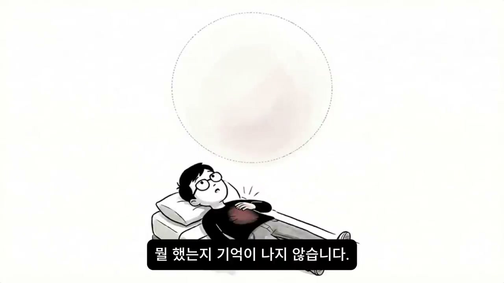
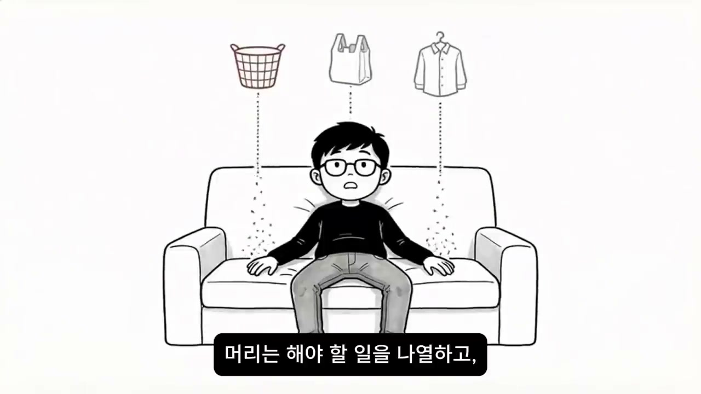
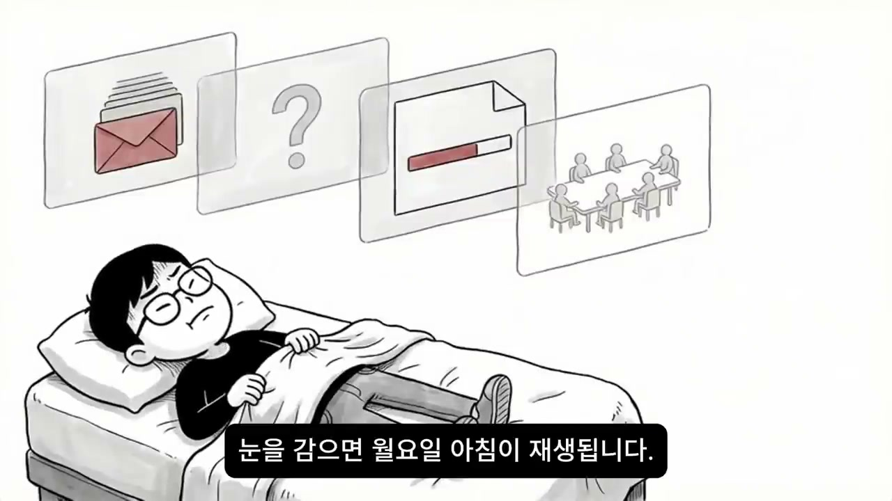
토요일 밤 침대에서 하루를 되짚으면 “한 게 없다”는 감각이 남는다. 감정은 후회/슬픔이라기보다 “비어 있음”에 가깝고, 쉬긴 쉬었는데 무엇을 했는지 기억이 안 나는 공허와 약한 죄책감이 가슴을 누른다. 그때 다시 “내일은 일요일이니까 내일 하면 돼”라는 면죄부 문장이 작동한다.
일요일은 더 늦게(12시) 일어났는데도 더 무겁다. 할 일 압박(빨래, 장보기, 월요일 옷 준비)은 올라오는데, 몸은 소파에 붙고 머리만 할 일을 나열한다. 1시, 2시, 3시가 흐른 뒤 4시에 겨우 빨래를 돌리고, 그것만으로 힘이 다 빠진 느낌을 묘사한다.
일요일 6시에는 갑자기 가슴이 조여 오고, “내일 출근”이라는 단어가 등장하는 순간 남은 시간이 전부 카운트다운으로 변한다. 7시 저녁은 맛이 없고, 8시 샤워 중엔 월요일 아침 회의가 떠오르며, 9시에 누워도 잠이 오지 않는다. 눈을 감으면 밀린 메일, 어려운 질문, 미완 보고서, 표정 관리 회의가 슬라이드처럼 지나간다. 10시가 되어도 자세를 바꾸고 음악을 틀어도 무효다.
시각적으로 세그먼트 6의 흐린 말풍선과 붉게 칠해진 가슴은 “정체 모를 압박”을, 세그먼트 7의 거울+WHY?는 자책 질문을 상징한다. 세그먼트 8은 메일/질문/보고서/회의 패널이 침대 위로 떠서 불면의 인지 과부하를 도식화한다.
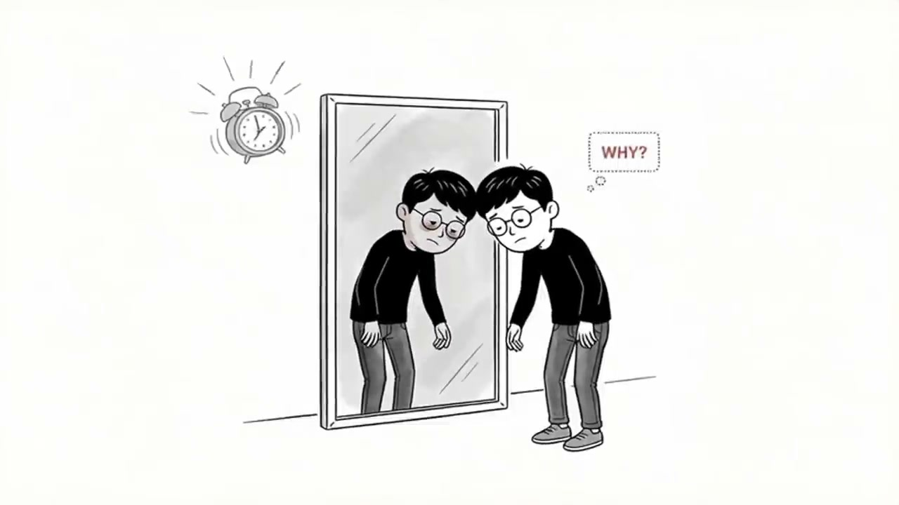
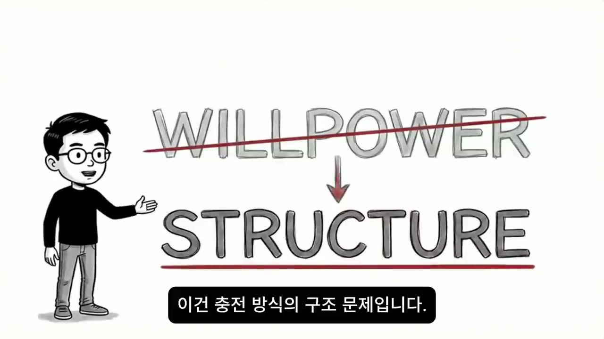
새벽 1시에 알람 시간을 확인하고 “5시간밖에 못 자겠다”는 계산이 가슴을 누른다. 새벽 2시에는 “4시간은 자야 한다”는 압박이 잠을 더 밀어내고, 결국 3시쯤 의식이 끊기듯 잠든다. 월요일 알람이 울리면 몸은 천근만근, 눈 뜨는 데도 온 힘을 써야 한다.
거울 앞에서 확인한 얼굴은 “주말에 쉬었는데 금요일보다 더 지친 상태”다. 여기서 화자는 “나만 약해서 그런가?”라는 질문을 던진 뒤 즉시 방향을 틀어, 의지의 문제가 아니라 충전 방식의 구조 문제라고 규정한다. 뇌는 회복을 “아무것도 안 함의 총량”으로 채우지 못하며, 무행동이 길어지면 오히려 소모 모드로 전환되기 쉽다고 주장한다.
시각적으로 세그먼트 9는 소파 위 인물 위로 빨래/장보기/셔츠 아이콘이 떠 있고 신체는 정지한 모습이라 “인지-행동 분리”를 보여준다. 세그먼트 10은 WILL POWER를 지우고 STRUCTURE를 강조해 이 영상의 핵심 전환점을 명시한다.
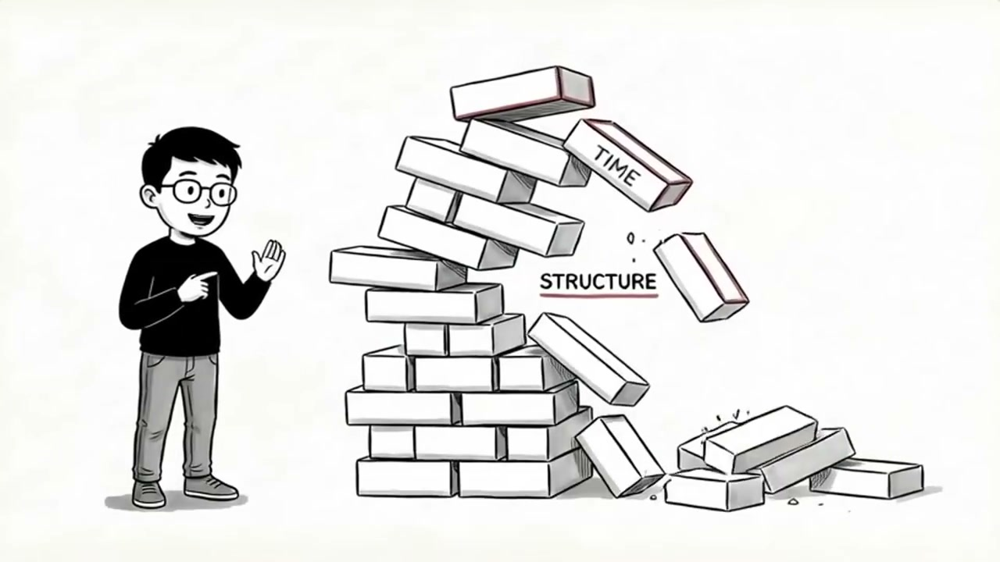
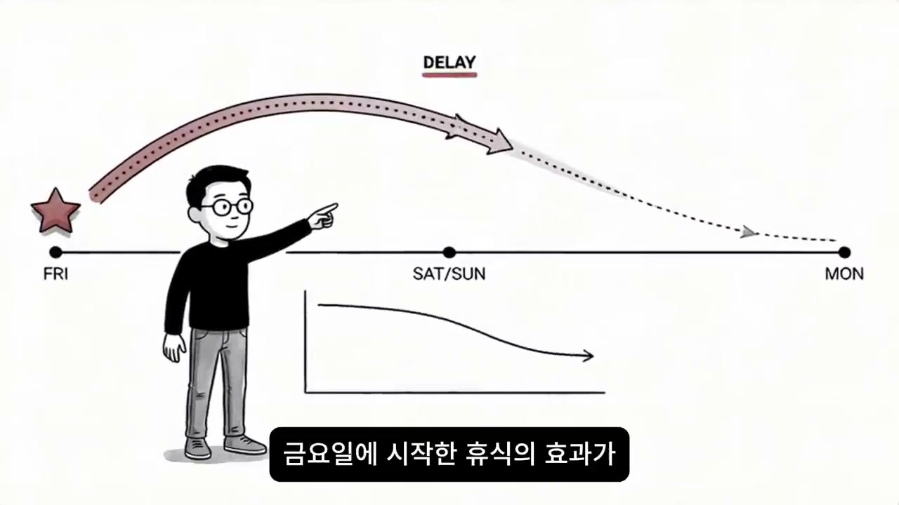
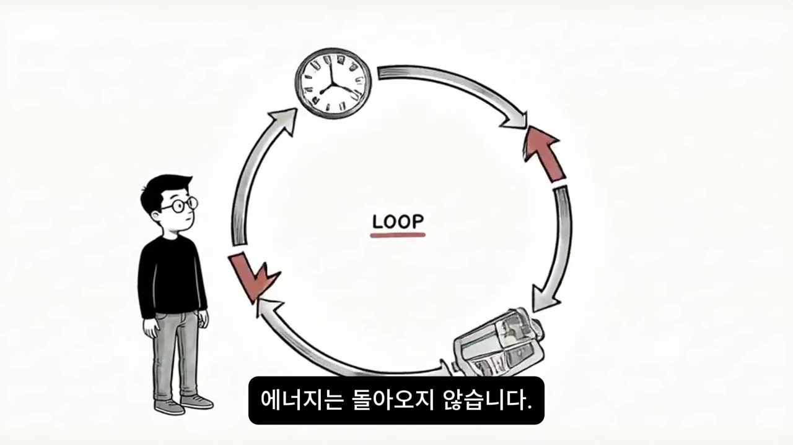
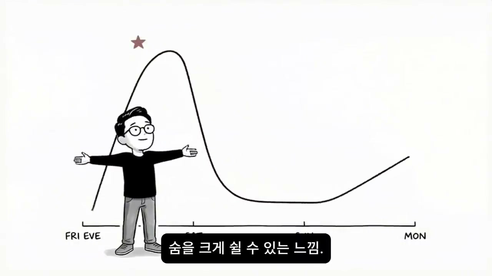
무엇을 할지 정하지 못한 채 선택지만 머릿속에서 돌리는 것 자체가 이미 “연산”이며, 쉬는 중에도 뇌는 바쁜 상태라는 설명이 나온다. 이를 화자는 “구조 없는 휴식”이라고 정의한다. 비유는 건물: 시간은 벽돌, 구조는 시멘트/접착제다. 시멘트 없이 벽돌만 쌓으면 바람/비에 무너진다. 즉, 토요일에 10시간 쉬어도 기둥이 없으면 월요일 아침에 남는 것이 없다.
여기서 “보상 지연” 원리를 연결한다. 행동과 보상 사이 거리가 멀수록 뇌는 그 행동의 가치를 낮게 평가한다. 금요일에 시작한 휴식의 효과가 체감되어야 할 시점은 월요일 아침인데, 이틀 간격은 뇌에게 너무 멀다. 따라서 “토요일 산책 → 월요일 컨디션 개선” 연결이 약해져 지금 행동할 이유를 못 찾는다.
이 구조가 반복되면 주말은 이상하게 굳는다. 쉬는데 쉬는 것 같지 않고, 노는데 즐겁지 않고, 시간은 가는데 에너지는 안 돌아온다. 이 패턴이 4주, 8주 쌓이면 주말 자체가 회복이 아니라 소모의 시간으로 각인되고, 일요일 저녁 공포는 갑자기 오는 게 아니라 토요일 오후부터 샌 에너지가 일요일 밤 바닥을 드러낸 결과가 된다.
시각적으로 세그먼트 11은 DELAY 아크(FRI→SAT/SUN→MON)와 하강 곡선으로 보상 지연을, 세그먼트 12는 TIME 벽돌 붕괴와 STRUCTURE 텍스트로 구조 결핍을 표현한다. 세그먼트 13의 LOOP 순환 화살표는 “잠 안 옴→생각→불안→더 잠 안 옴” 루프를, 세그먼트 14의 곡선 그래프는 금요일 저녁 해방감 정점 이후 주말 저점 형성을 시각화한다.
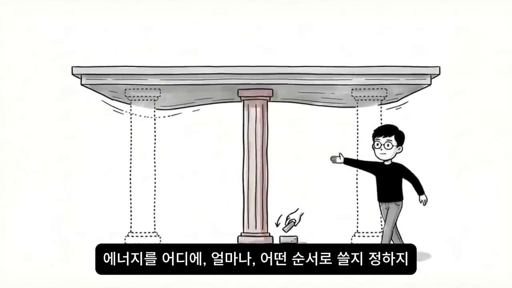
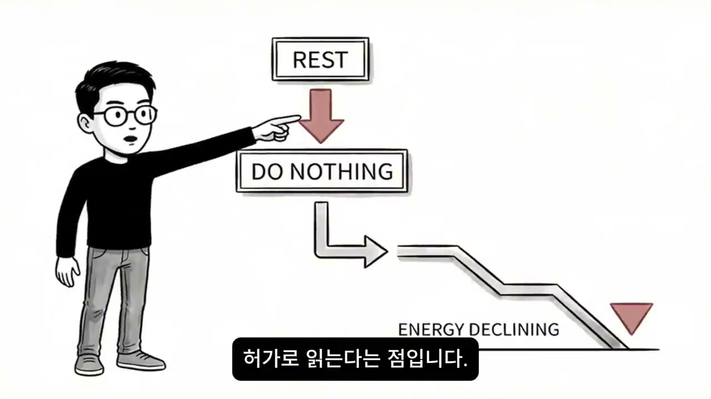
화자는 “무엇을 바꿔야 하나?”라는 질문에 대해 거창한 계획이 필요 없다고 못 박는다. 문제는 에너지 총량 부족이 아니라, 에너지를 어디에/얼마나/어떤 순서로 쓸지 정하지 않은 채 주말을 여는 구조다. 건물 비유로는 “기둥이 빠진 상태”.
첫 번째 실천은 “생각의 벽” 인식이다. 금요일 퇴근 후 떠오르는 “이번 주말엔 그냥 푹 쉬어야지” 문장은 자연스럽지만, 뇌가 이를 “아무것도 안 해도 된다”는 전면 허가로 해석할 때 문제가 시작된다. 무행동이 1~2시간이면 휴식이지만, 10시간이 넘으면 정체가 되고, 정체가 쌓이면 오히려 피로가 증가한다.
실전 지시문은 간단하다. 그 문장이 떠오르는 순간 한 번 멈춰 “지금 내 뇌가 구조 없는 쉼을 선택하려고 한다”라고 알아차리기만 하라는 것이다. 이 인식 자체가 벽에 금을 내는 첫 동작으로 제시된다.
시각적으로 세그먼트 15는 지붕을 떠받치는 기둥(중앙만 실선, 양옆 점선)으로 “하나의 기둥만 먼저 세우기”를 보여주고, 세그먼트 16은 REST → DO NOTHING → ENERGY DECLINING 흐름으로 허가 문장의 역효과를 직선적으로 표현한다.
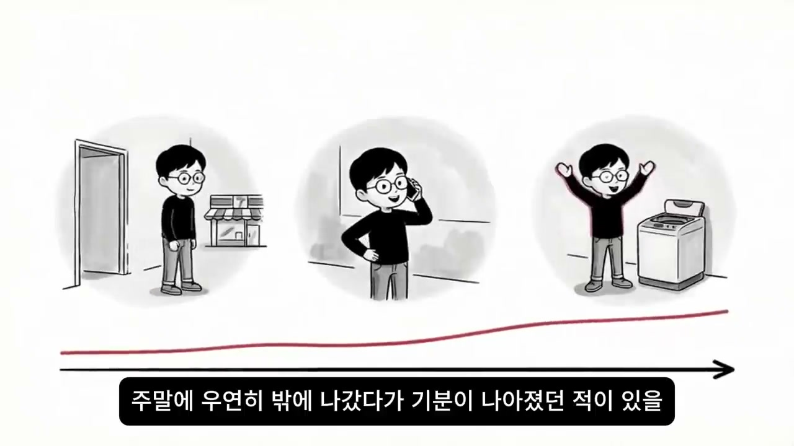
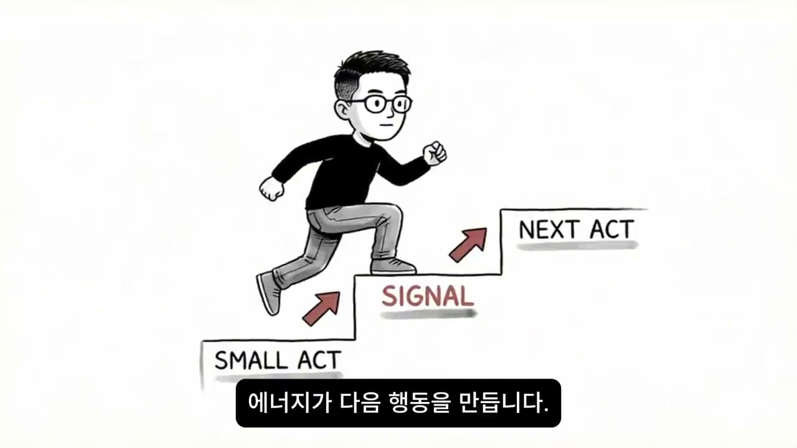
두 번째 실천은 “행동 선행 기억” 소환이다. 주말에 우연히 밖에 나갔다가 기분이 나아진 순간, 별생각 없이 친구 연락에 응했다가 에너지가 오른 저녁, 억지로 빨래를 돌렸더니 끝나고 개운했던 오후 같은 실제 기억을 꺼내 보라고 한다.
핵심 문장은 명확하다: “그때 에너지가 있어서 움직인 게 아니라, 움직였더니 에너지가 따라왔다.” 작은 동작이라도 완료 신호가 들어오면 다음 행동의 문턱이 낮아지는 경향이 있고, 행동이 에너지를 만들고 그 에너지가 다음 행동을 만드는 순환이 가능해진다는 설명이다.
시각적으로 세그먼트 17은 바깥 나가기→통화→빨래 완료 장면이 시간축 위에서 점진 상승하는 모습을 보여준다. 세그먼트 18은 SMALL ACT → SIGNAL → NEXT ACT 계단 도식으로 “완료 신호 기반의 연쇄 행동”을 구조화한다.
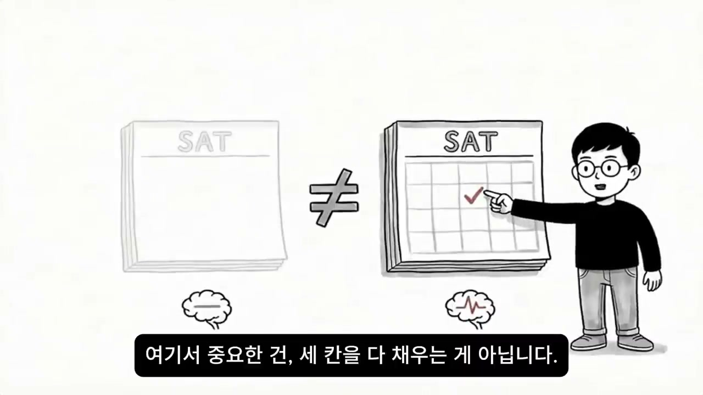
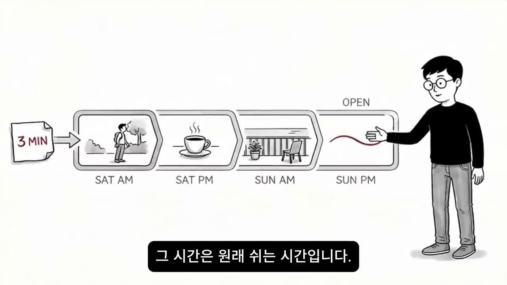
구체 행동 1은 금요일 밤 잠들기 전에 주말 에너지를 3칸으로 나누는 것이다: 토요일 오전 1칸, 토요일 오후 1칸, 일요일 오전 1칸. 각 칸에는 딱 1개만 적는다. 예시는 산책, 카페, 요리, 청소, 편의점 다녀오기, 베란다 5분 서 있기 등이며, 작성 시간은 3분이면 충분하다고 못 박는다.
중요한 건 3칸을 다 채우는 게 아니다. 1칸만 적어도 뇌에 기준점이 생긴다. “아무것도 안 한 토요일”과 “한 가지를 한 토요일”은 뇌가 전혀 다르게 기록하며, 첫 완료 신호가 나머지 시간의 질을 바꾼다. 보상은 ‘완료’가 아니라 ‘착수’에도 붙기 시작한다는 설명이다.
또한 선택지가 한 개로 줄면 머릿속 회의 시간이 짧아진다. 이 3분 메모가 이틀의 방향타가 되며, 일요일 오후 칸은 의도적으로 비워두라고 권한다. 구조를 세우는 일은 모든 시간을 채우는 게 아니라, 기둥 시간과 비움 시간을 구분하는 일이라고 강조한다.
시각적으로 세그먼트 19는 “빈 SAT 달력 ≠ 체크된 SAT 달력” 대조를 통해 1행동의 신경학적 차이를 보여주고, 세그먼트 20은 3 MIN 메모에서 SAT AM / SAT PM / SUN AM으로 이어지는 프레임과 SUN PM OPEN으로 의도적 공백을 명시한다.
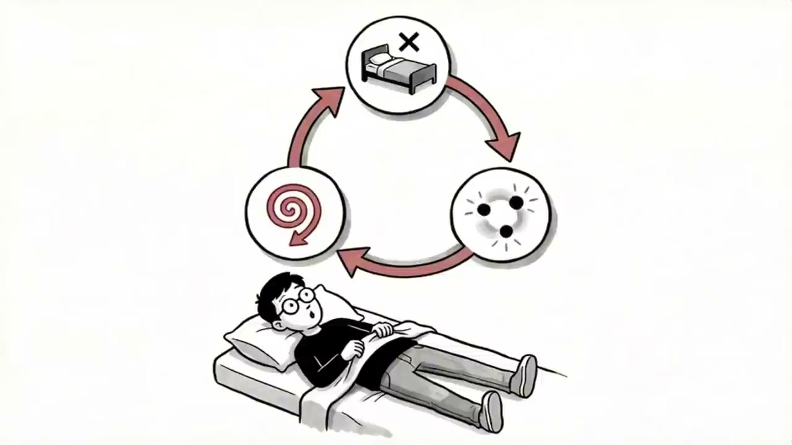
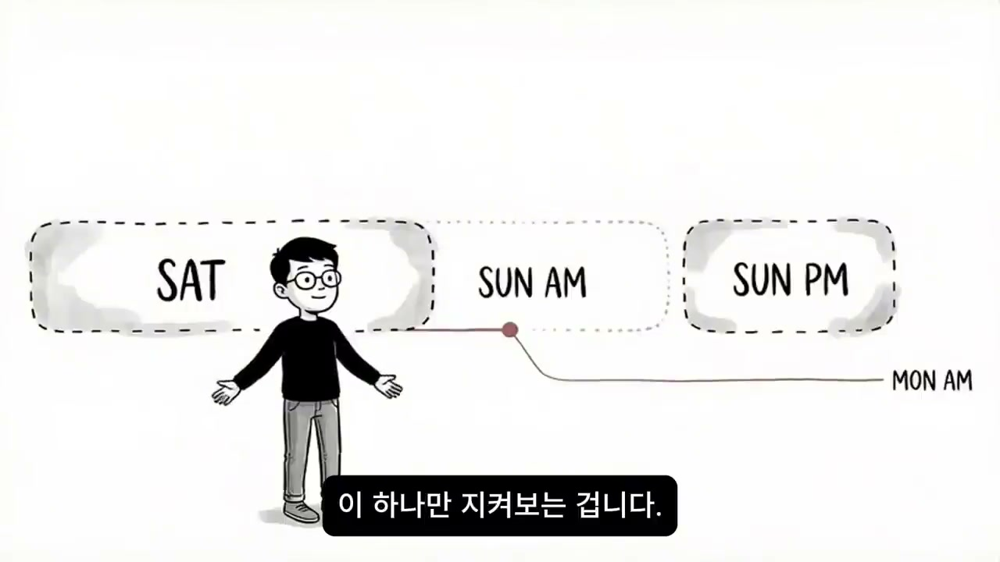
일요일 밤 공포는 수면 리듬이 밀린 상태에서 증폭된다고 설명한다. 예시 수치가 구체적이다: 토요일 새벽 2시에 자고 일요일 낮 12시에 일어나면, 체내 시계가 평일과 크게 어긋난다. 그 상태에서 일요일 밤 11시에 잠을 청하면 뇌는 아직 저녁으로 인식하고, 잠이 안 와서 생각이 많아지고, 생각이 많아져 불안이 커지고, 불안이 커져 더 잠이 안 오는 루프가 생긴다.
여기서 제시하는 최소 행동은 “일요일 아침 알람을 평일보다 딱 30분만 늦게” 맞추는 것. 2시간, 3시간이 아니라 30분이다. 평일 알람이 7시면 일요일은 7시 30분. 토요일까지 통제하려 들면 주말 자체가 스트레스가 되므로, 장치는 일요일 오전 한 점에만 둔다.
이 장치의 목적은 주말 통제가 아니라 월요일 아침 괴리감 감소다. 화자는 “시작 신호가 먼저 들어오면 몸이 먼저 움직이고, 의미는 나중에 붙는다”고 말하며, 행동 선행 원리와 수면 리듬 장치를 연결한다.
시각적으로 세그먼트 21은 불면-불안 순환 루프를 아이콘으로 압축해 보여주고, 세그먼트 22는 SAT / SUN AM / SUN PM → MON AM 연결선으로 리듬 브리지를 시각화한다.
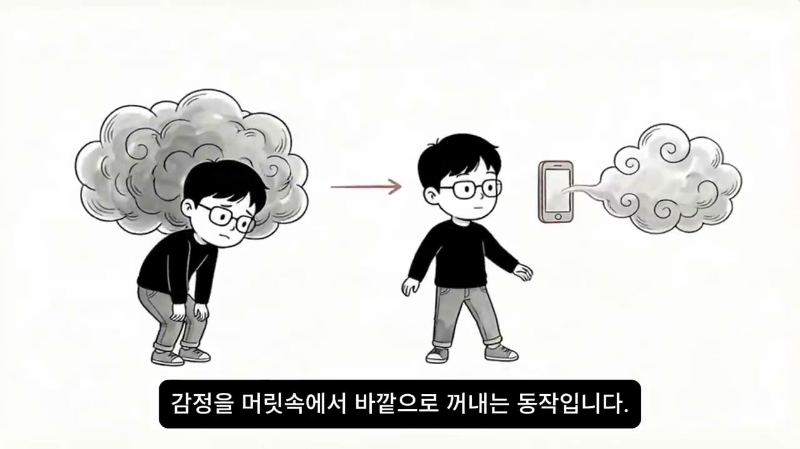
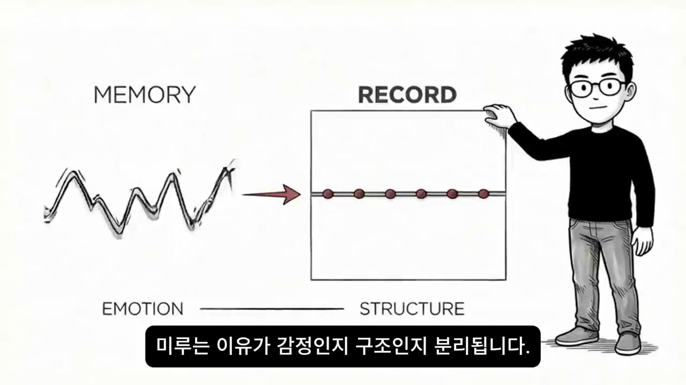
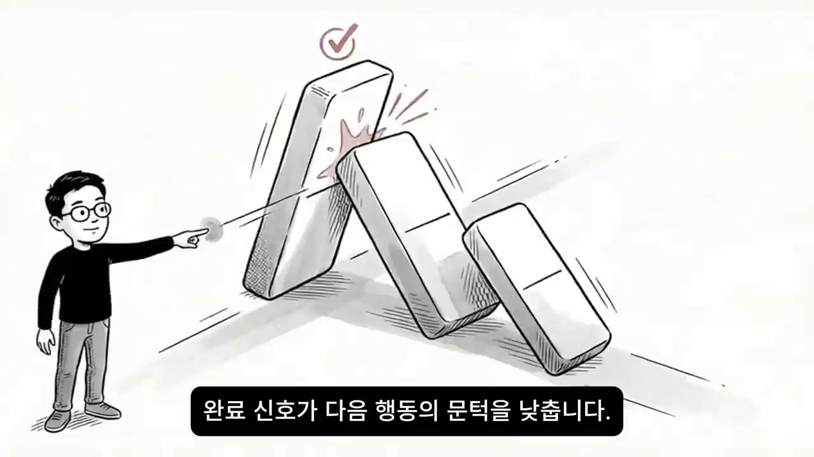
일요일 저녁 6시에 불안이 올라올 때는 휴대폰 메모장을 열고 딱 한 줄만 적는다. 포맷은 “오늘 내 감정 날씨 + 맑음/흐림/비/폭풍 중 하나 선택.” 이유를 적지 않아도 되고, 분석하지 않아도 되고, 설명할 필요도 없다고 명확히 말한다.
핵심은 쓰는 행위 자체다. 감정을 머릿속 순환에서 화면 위 글자로 바깥화하면, 뇌가 그 감정을 한 발 떨어진 거리에서 보기 시작한다. 거리가 생기면 강도가 달라지고, 1주·2주·3주 누적하면 패턴이 보인다. “매주 일요일 저녁이 폭풍”이라는 반복 데이터는 “내가 과한 사람”이 아니라 “구조 신호”라는 해석을 가능하게 한다.
이때 자책 문장이 끼어들 틈이 줄어든다. 기준이 기억이 아니라 기록이 되기 때문이다. 미루는 이유가 감정인지 구조인지 분리되고, 세 행동을 한 번에 다 할 필요 없이 이번 주말엔 하나만 고르고, 자리 잡으면 다음 주에 하나를 추가하라고 권한다.
시각적으로 세그먼트 23은 구름(내부 감정)이 스마트폰 바깥으로 빠져나오는 장면으로 외재화를 표현한다. 세그먼트 24는 MEMORY의 요동선을 RECORD의 점 데이터로 바꾸는 도식, 세그먼트 25는 도미노 첫 타격(체크 표시)으로 완료 신호의 연쇄 효과를 보여준다.
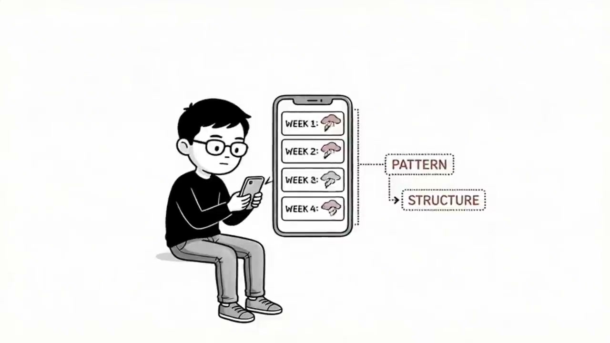
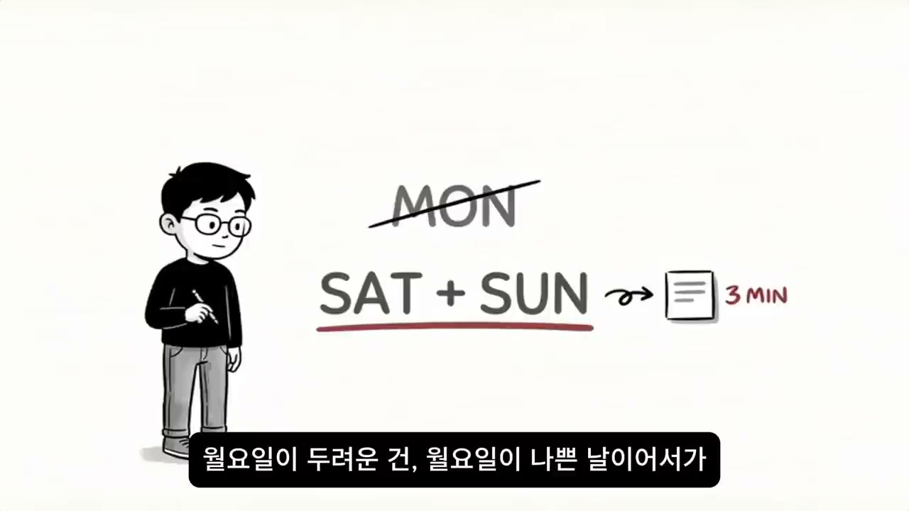
화자는 이 작은 구조들의 장점을 “실수해도 복구 비용이 작다”로 정리한다. 감정 날씨를 기록하면 다음 주 일요일에 지난주 데이터를 확인할 수 있고, 매주 같은 시간대에 같은 감정을 느꼈다는 사실만으로도 “결함이 아니라 반복 구조”라는 인식 전환이 가능해진다. 오늘의 한 번이 내일의 저항을 낮춘다는 문장도 이 맥락에서 나온다.
세 기둥을 다시 명시한다: 에너지 버짓(1번), 수면 루틴(2번), 감정 기록(3번). 기둥 하나만 서도 벽돌이 흩어지지 않으며, 세 개를 한꺼번에 세울 필요는 없다고 반복한다. 이번 주말에는 하나만 세우고, 다음 주에 두 번째를 올릴 여유를 만든다. 이것이 “구조”의 정의다.
이어 관점을 바꾼다. 월요일이 두려운 건 월요일이 나빠서가 아니라, 주말 동안 에너지가 설계 없이 흘러갔기 때문이다. 무너진 건 월요일이 아니라 그 전 이틀의 구조이며, 구조를 세우는 데 대단한 의지는 필요 없고 “3분 메모 한 장”으로 시작 가능하다고 재강조한다.
시각적으로 세그먼트 26은 주차별 기록(Week 1~4)에서 PATTERN → STRUCTURE로 연결한다. 세그먼트 27은 MON을 지우고 SAT + SUN → 3 MIN으로 재정의해 문제 초점을 이동시킨다.
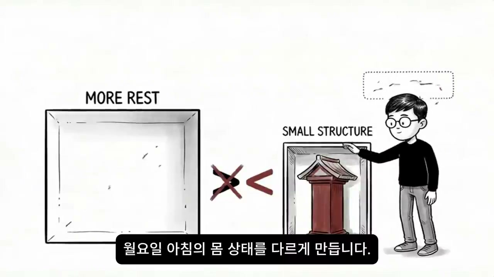
“완벽한 휴식” 기대를 내려놓으라고 말한다. 완벽한 휴식은 존재하지 않으며, 차이는 휴식의 길이가 아니라 구조의 유무다. 기둥 있는 건물과 없는 건물이 다르듯, 설계가 있는 주말과 없는 주말은 월요일 아침의 몸 상태를 다르게 만든다. 즉 “더 많은 휴식”보다 “더 작은 구조”가 우선일 수 있다.
영상은 첫 장면(일요일 밤 알람)으로 돌아간다. 화면에 숫자가 떠 있고 손이 멈췄던 그 순간, 이제 한 가지가 달라진다. “내일이 무서운 게 아니라 이번 주말에 구조가 빠져 있었구나”를 아는 것만으로 손가락이 다시 움직여 알람을 누를 수 있게 된다는 결론이다.
마지막 메시지는 위로와 책임 분리다. “당신이 유독 약한 게 아니다. 안 되는 게 아니다. 방법이 맞지 않았을 뿐.” 그리고 이 콘텐츠가 뇌과학·심리학 기반 교양 정보이며, 의학적 진단/치료를 대체하지 않는다는 디스클레이머로 종료한다.
시각적으로 세그먼트 28은 MORE REST보다 SMALL STRUCTURE가 유리하다는 비교 프레임을 제시하고, 세그먼트 29는 7:00 알람(체크)과 평온한 표정으로 “공포-확정” 장면의 정서적 반전을 완성한다.
“알람을 누르면 내일이 확정됩니다.”
“이건 단순히 출근이 싫은 게 아닙니다.”
“성격의 문제가 아닙니다. 노력의 부족도 아닙니다.”
“의지 문제가 아닙니다. 이건 충전 방식의 구조 문제입니다.”
“뇌는 아무것도 안 하는 시간만으로 채워지지 않습니다.”
“쉬고 있는데 머릿속은 바쁜 상태, 이게 구조 없는 휴식의 실체입니다.”
“행동과 보상 사이의 거리가 멀수록 뇌는 가치를 낮게 평가합니다.”
“그때 에너지가 있어서 움직인 게 아니었습니다. 움직였더니 에너지가 따라온 겁니다.”
“완료 신호가 다음 행동의 문턱을 낮춥니다.”
“3칸을 다 채우는 게 아닙니다. 한 칸만 적어도 기준점이 생깁니다.”
“2시간, 3시간이 아니라 딱 30분입니다.”
“기억이 아니라 기록이 기준이 됩니다.”
“월요일이 두려운 건 월요일이 나쁜 날이어서가 아닙니다.”
“더 긴 휴식이 아니라 더 작은 구조가 필요했을 수 있습니다.”
“당신이 유독 약한 게 아닙니다. 방법이 맞지 않았을 뿐입니다.”
이 영상의 핵심 메시지는 “월요일 공포”를 개인 결함이 아닌 반복 가능한 구조 문제로 재정의하는 데 있다. 문제의 위치를 ‘나’에서 ‘설계’로 옮기면, 감정적 자책이 실험 가능한 행동으로 바뀐다.
실용적으로는 세 가지 중 하나만 먼저 적용하면 된다.
향후 전망은 “완벽한 주말”이 아니라 “무너지지 않는 주말”이다. 구조가 쌓이면 일요일 저녁 불안 루프가 짧아지고, 월요일 아침의 괴리감이 줄며, 장기적으로는 주말이 다시 회복의 시간으로 재학습될 가능성이 높다는 것이 이 영상의 결론이다.
댓글
GitHub 이슈 기반 댓글 시스템입니다.